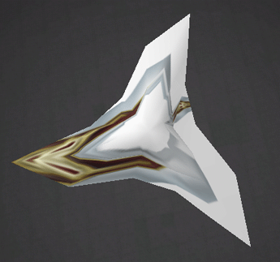
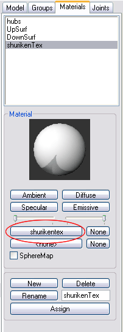

MilkShape For UT2003 Static Meshes/Applying File Textures In MS3D
NOTE: The pictures in this tutorial do not show the interface elements to relative scale.
Applying File Textures
The materials assigned in the previous tutorial section had no associated file textures – they were essentially just names for UEd to use when assigning smoothing to an imported model. In the UEd Texture browser, an actual texture file was assigned to the model, but the UV texture coordinates of the model hadn't been modified – there is texture stretching due to the scale & rotate modeling procedures (FIG 19). The model needs to be texture mapped.

FIG. 19 A "pictorial" texture applied to shuriken shows distortion |
Texture mapping in MS3D is pretty basic – it only provides for planar projection mapping. The projection axis is chosen from one of the orthographic views: Top, Bottom, Left, Right, Front or Back. The faces of the model that are being mapped must be oriented parallel to one of these viewplanes for textures to be mapped without stretching, which complicates the texturing process. There are no numeric methods for positioning textures, so very exact placements are tricky. Despite these limitations, texture-mapping MS3D models can be successful if carefully planned.
For the shuriken model, a 256x256 texture was painted, using a screen capture from the MS3D Top viewport as a guide. The texture is displayed below – download it for use with this tutorial section. The JPEG format is OK for use in MS3D, but you'll need to convert it to a BMP or TGA file for use in UEd.
![[shurikentex]](images/shurikentex.jpeg) FIG. 20 The texture for the shuriken – 256x256. Convert to BMP or TGA for UEd. |
The texture will initially be applied to all faces simultaneously, so that it can be fitted to the model accurately. In MilkShape, Select All. In the Group tab, click the Regroup button. Enable Rotate (F3), and in the Top viewport, rotate the model until one blade points down, matching the texture positioning as closely as possible (it doesn't need to be 100% accurate at this point). Enable Textured in the Top viewport and 3D viewport options.
![[MS3DT-21]](images/ms3dt-21.gif) FIG. 21 Model rotated for texture mapping |
In the Materials tab, create a new Material named shurikenTex. Choose white as a Diffuse color. Click on the top wide button labeled <none>, located in the center set of Materials tab buttons (FIG. 22). The bottom button labeled <none> is for applying an alpha-mask file.

FIG. 22 Adding a file texture to a material in MS3D |
In the Open Image dialog that opens, find shuriken.jpg and open it. Click Assign in the Materials tab – the model should now display the applied texture file, but in a distorted manner (FIG 22). This is due to the default UV mapping of the cylinder that became a shuriken.
![[MS3DT-22]](images/ms3dt-22.gif) FIG. 23 Distorted texture in MS3D |
In the MS3D main menu, use Window>Texture Coordinate Editor, or the shortcut keys Ctrl+T. The Texture Coordinate Editor (TCE) opens in its own app window. On the right of the TCE, enter 2.0 in the text field next to the Scale button, then click Scale. Drag the corner of the TCE dialog to enlarge it, and position it where the MS3D Top viewport is also visible. Check the Redraw checkbox.
Use Ctrl+MMB (middle mouse button) to drag the image in the TCE window more to the center of the window.
The current projection for the texture placement is from the front of the original cylinder – the meshlines shown in the TCE correspond to an ortho Front view of the cylinder. The model has been stretched to fit to the texture file in all directions.
In the TCE, note that Regroup1 (the regrouped shuriken mesh) is selected in the top drop-down list (which specifies the group being mapped), and that Front is selected in the bottom (which specifies the projection axis). Click the down-karat next to Front and select Top from the list. Click Remap
The TCE meshlines change to a view from the Top, and in the Top viewport, the texture looks less distorted, if a bit off-center.
To realign the texture more accurately, click the Region button in the TCE. Starting just inside the top left blade point of the shuriken texture, drag a rectangle in the TCE window, making sure that the sides of the rectangle fall just inside the blade points of the texture image (which was made slightly oversize so it would "bleed" over the model edges). Then click Remap. The texture will align itself more closely to the model.
If you're very lucky, you rotated the model EXACTLY enough to perfectly fit the texture – good job! But if not, it's a simple matter to rotate the model a bit more in the appropriate direction, Remap the texture using Region, and checking the results. The goal is a well-aligned model and texture outline:
![[MS3DT-23]](images/ms3dt-23.gif) FIG. 24 Aligning the model & the texture in the TCE |
It's possible to rotate the texture in the TCE, but you may find it harder to control than rotating the model and Remapping as needed.
The model now has a single material applied, which includes a texture file, and a new set of UV texture coordinates (mapping) applied from the Top projection. The single texture means that UED will smooth the entire model on import – not desirable.
To re-establish the "smoothing by material name" of the previous tutorial section, select and regroup the faces of the model into three groups (hubs, UpSurf and DownSurf) as was previously done. Then assign each new group its corresponding named material.
In the Materials tab, select materials hubs, UpSurf, and DownSurf, and specify the shuriken.jpg image as the texture file for each, and change the Diffuse color to white. Essentially, these materials are now identical to shurikenTex and to each other. Remember, only the material names matter for UEd's smoothing operations. In the viewports, the shuriken model does not change in appearance – the UV coordinates weren't changed by regrouping, and three materials identical except for name have been applied.
Save the file and export it to a new LWO file, shuriken2.lwo.
In UEd, make sure the MilkShapeMaterial.utx texture package and the WikiTute_SM.usx static mesh package are open and fully loaded. Then import shuriken2.lwo into the WikiTute_SM.MS3Dmodels group. Save the .usx package.
In the Texture browser, import the BMP or TGA version of the shuriken texture image into the MilkShapeMaterial.NamedMaterials group. Save the .utx package. Select the newly-imported texture.
![[MS3DT-24]](images/ms3dt-24.gif) |
In the Static Mesh browser, expand the Materials section for shuriken2, then assign the selected texture in each of the Material slots. shuriken2 now has a fully UV mapped texture file applied, and the original smoothing groups are preserved as well.
![[MS3DT-00]](images/ms3dt-00.gif) |
This ends the tutorial. Go forth and model worlds!